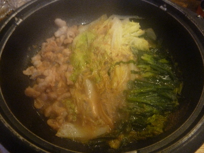
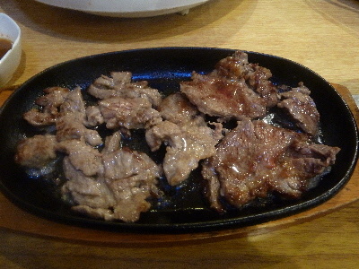

お食事処まるみのモツ鍋は安いですね。
2018/01/08
出雲市でもつ鍋を食べようと思ってインターネット検索したんですが、あまり出てこなかったです。
お値段の高いところとか、全国にありそうな系列店以外を探したら、「お食事処まるみ」ってお店が見つかりました。
店内には手書きのメニューが沢山貼ってあって、昭和っぽい定食屋さんでした。
もつ鍋は1人前なんと600円です。

上の写真が1人前です。
ご飯とお味噌汁の付いたもつ鍋定食にして800円（プラス税）で注文しました。
1人で鍋が食べれるっていいですね。しかも安いです。
甘辛のタレでご飯がすすみました。

これは焼肉定食お肉です。焼肉定食も800円（プラス税）です。
お肉が固かったですが（個人差はあると思いますが）、量が多いのお得な感じでした。